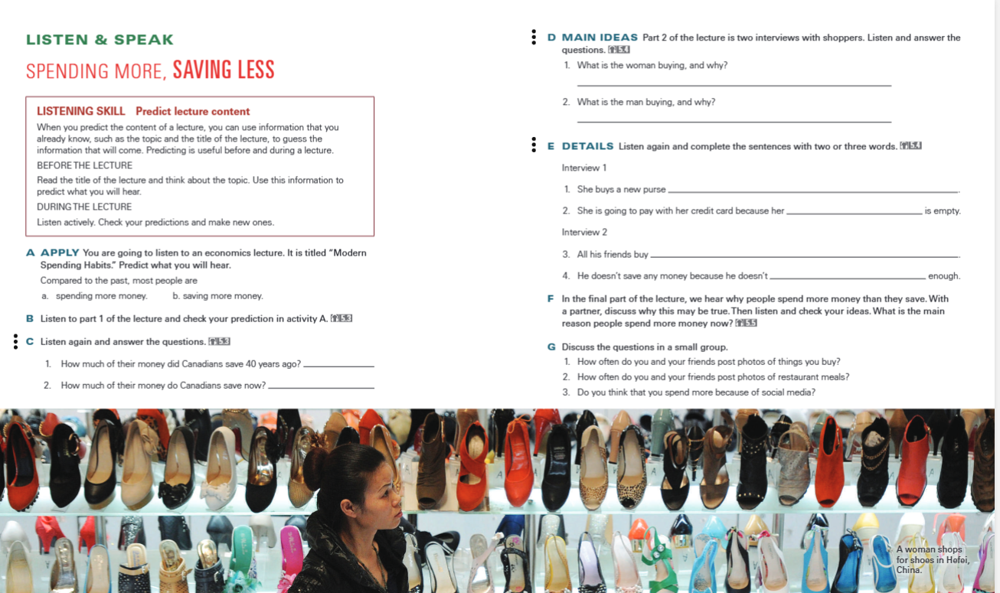

Explore why people buy things, how they save, and how social media affects spending. Complete the original lesson activities A–G and bonus challenges.

Your digital textbook: the full original pages are pictured above. Zoom with your browser if needed.
Progress is saved automatically on this device. No correct answers appear until Finish + Grade.